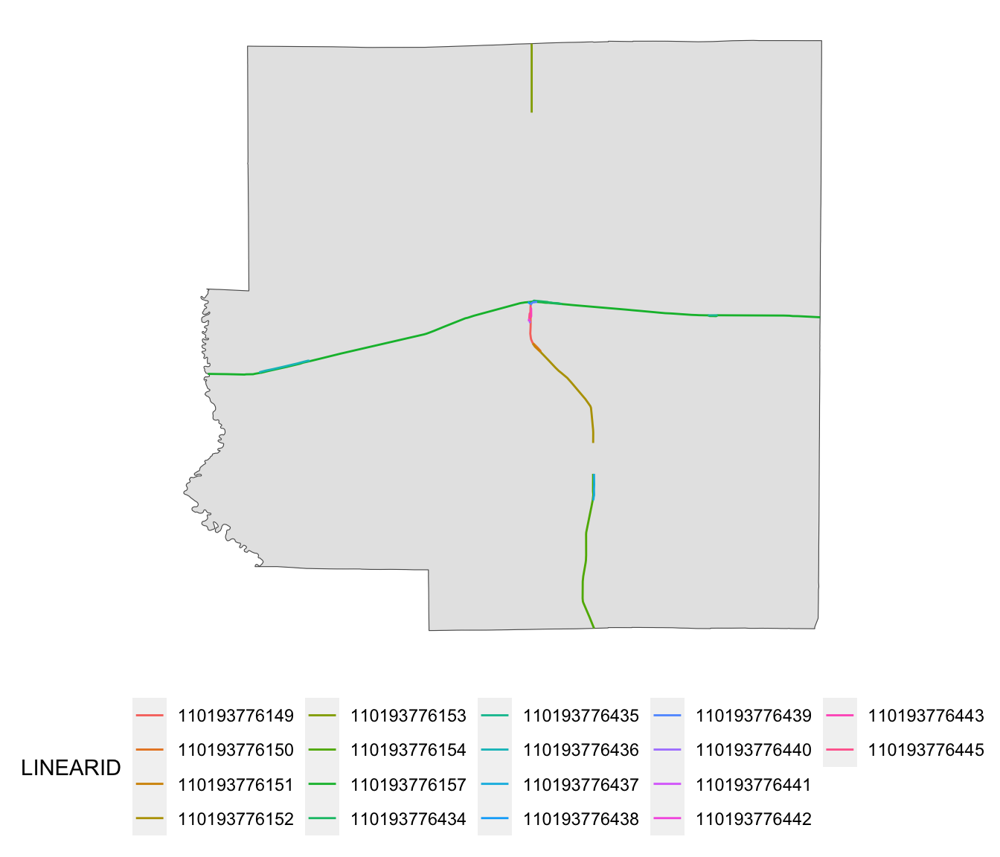

1.4 Demonstration 4: The Impact of Railroad Presence on Corn Planted Acreage
1.4.1 Project Overview
Objective
- Understand the impact of railroad on corn planted acreage in Illinois
Datasets
- USDA corn planted acreage for Illinois downloaded from the USDA NationalAgricultural Statistics Service (NASS) QuickStats service using
tidyUSDApackage - US railroads (line data) downloaded from here
Econometric Model
We will estimate the following model:
\[ y_i = \beta_0 + \beta_1 RL_i + v_i \]
where \(y_i\) is corn planted acreage in county \(i\) in Illinois, \(RL_i\) is the total length of railroad, and \(v_i\) is the error term.
GIS tasks
- Download USDA corn planted acreage by county as a spatial dataset (
sfobject)- use
tidyUSDA::getQuickStat()
- use
- Import US railroad shape file as a spatial dataset (
sfobject)- use
sf:st_read()
- use
- Spatially subset (crop) the railroad data to the geographic boundary of Illinois
- use
sf_1[sf_2, ]
- use
- Find railroads for each county (cross-county railroad will be chopped into pieces for them to fit within a single county)
- use
sf::st_intersection()
- use
- Calculate the travel distance of each railroad piece
- use
sf::st_length()
- use
- create maps using the
ggplot2package- use
ggplot2::geom_sf()
- use
Preparation for replication
- Run the following code to install or load (if already installed) the
pacmanpackage, and then install or load (if already installed) the listed package inside thepacman::p_load()function.
if (!require("pacman")) install.packages("pacman")
pacman::p_load(
tidyUSDA, # access USDA NASS data
sf, # vector data operations
dplyr, # data wrangling
ggplot2, # for map creation
modelsummary, # regression table generation
keyring # API management
)- Run the following code to define the theme for map:
theme_for_map <-
theme(
axis.ticks = element_blank(),
axis.text = element_blank(),
axis.line = element_blank(),
panel.border = element_blank(),
panel.grid.major = element_line(color = "transparent"),
panel.grid.minor = element_line(color = "transparent"),
panel.background = element_blank(),
plot.background = element_rect(fill = "transparent", color = "transparent")
)1.4.2 Project Demonstration
We first download corn planted acreage data for 2018 from USDA NASS QuickStat service using tidyUSDA package23.
(
IL_corn_planted <-
getQuickstat(
#--- use your own API key here fore replication ---#
key = key_get("usda_nass_qs_api"),
program = "SURVEY",
data_item = "CORN - ACRES PLANTED",
geographic_level = "COUNTY",
state = "ILLINOIS",
year = "2018",
geometry = TRUE
) %>%
#--- keep only some of the variables ---#
dplyr::select(year, NAME, county_code, short_desc, Value)
)Simple feature collection with 90 features and 5 fields (with 6 geometries empty)
geometry type: MULTIPOLYGON
dimension: XY
bbox: xmin: -91.51308 ymin: 36.9703 xmax: -87.4952 ymax: 42.50848
CRS: +proj=longlat +ellps=GRS80 +towgs84=0,0,0,0,0,0,0 +no_defs
First 10 features:
year NAME county_code short_desc Value
1 2018 Bureau 011 CORN - ACRES PLANTED 264000
2 2018 Carroll 015 CORN - ACRES PLANTED 134000
3 2018 Henry 073 CORN - ACRES PLANTED 226500
4 2018 Jo Daviess 085 CORN - ACRES PLANTED 98500
5 2018 Lee 103 CORN - ACRES PLANTED 236500
6 2018 Mercer 131 CORN - ACRES PLANTED 141000
7 2018 Ogle 141 CORN - ACRES PLANTED 217000
8 2018 Putnam 155 CORN - ACRES PLANTED 32300
9 2018 Rock Island 161 CORN - ACRES PLANTED 68400
10 2018 Stephenson 177 CORN - ACRES PLANTED 166500
geometry
1 MULTIPOLYGON (((-89.8569 41...
2 MULTIPOLYGON (((-90.16133 4...
3 MULTIPOLYGON (((-90.43227 4...
4 MULTIPOLYGON (((-90.50668 4...
5 MULTIPOLYGON (((-89.63118 4...
6 MULTIPOLYGON (((-90.99255 4...
7 MULTIPOLYGON (((-89.68598 4...
8 MULTIPOLYGON (((-89.33303 4...
9 MULTIPOLYGON (((-90.33573 4...
10 MULTIPOLYGON (((-89.9205 42...A nice thing about this function is that the data is downloaded as an sf object with county geometry with geometry = TRUE. So, you can immediately plot it (Figure 1.13) and use it for later spatial interactions without having to merge the downloaded data to an independent county boundary data.
ggplot(IL_corn_planted) +
geom_sf(aes(fill = Value / 1000)) +
scale_fill_distiller(name = "Planted Acreage (1000 acres)", palette = "YlOrRd", trans = "reverse") +
theme(legend.position = "bottom") +
theme_for_mapFigure 1.13: Map of Con Planted Acreage in Illinois in 2018
Let’s import the U.S. railroad data and reproject to the CRS of IL_corn_planted:
rail_roads <-
st_read(dsn = "Data/", layer = "tl_2015_us_rails") %>%
#--- reproject to the CRS of IL_corn_planted ---#
st_transform(st_crs(IL_corn_planted))Reading layer `tl_2015_us_rails' from data source
`/Users/tmieno2/Dropbox/TeachingUNL/R_as_GIS/Data' using driver `ESRI Shapefile'
Simple feature collection with 180958 features and 3 fields
Geometry type: MULTILINESTRING
Dimension: XY
Bounding box: xmin: -165.4011 ymin: 17.95174 xmax: -65.74931 ymax: 65.00006
Geodetic CRS: NAD83Here is what it looks like:
ggplot(rail_roads) +
geom_sf() +
theme_for_mapFigure 1.14: Map of Railroads
We now crop it to the Illinois state border (Figure 1.15):
rail_roads_IL <- rail_roads[IL_corn_planted, ]ggplot() +
geom_sf(data = rail_roads_IL) +
theme_for_mapFigure 1.15: Map of railroads in Illinois
Let’s now find railroads for each county, where cross-county railroads will be chopped into pieces so each piece fits completely within a single county, using st_intersection().
rails_IL_segmented <- st_intersection(rail_roads_IL, IL_corn_planted)Here are the railroads for Richland County:
ggplot() +
geom_sf(data = dplyr::filter(IL_corn_planted, NAME == "Richland")) +
geom_sf(
data = dplyr::filter(rails_IL_segmented, NAME == "Richland"),
aes(color = LINEARID)
) +
theme(legend.position = "bottom") +
theme_for_map
We now calculate the travel distance (Great-circle distance) of each railroad piece using st_length() and then sum them up by county to find total railroad length by county.
(
rail_length_county <-
mutate(
rails_IL_segmented,
length_in_m = as.numeric(st_length(rails_IL_segmented))
) %>%
#--- geometry no longer needed ---#
st_drop_geometry() %>%
#--- group by county ID ---#
group_by(county_code) %>%
#--- sum rail length by county ---#
summarize(length_in_m = sum(length_in_m))
)# A tibble: 82 x 2
county_code length_in_m
<chr> <dbl>
1 001 77189.
2 003 77333.
3 007 36686.
4 011 255173.
5 015 161397.
6 017 30611.
7 019 389061.
8 021 155706.
9 023 78532.
10 025 92002.
# … with 72 more rowsWe merge the railroad length data to the corn planted acreage data and estimate the model.
reg_data <- left_join(IL_corn_planted, rail_length_county, by = "county_code")lm(Value ~ length_in_m, data = reg_data) %>%
modelsummary(
stars = TRUE,
gof_omit = "IC|Log|Adj|Within|Pseudo"
)| Model 1 | |
|---|---|
| (Intercept) | 108174.680*** |
| (11417.546) | |
| length_in_m | 0.092* |
| (0.047) | |
| Num.Obs. | 82 |
| R2 | 0.046 |
| F | 3.858 |
| * p < 0.1, ** p < 0.05, *** p < 0.01 |
In order to actually download the data, you need to obtain the API key here. Once the API key was obtained, I stored it using
set_key()from thekeyringpackage, which was named “usda_nass_qs_api.” In the code to the left, I retrieve the API key usingkey_get("usda_nass_qs_api")in the code. For your replication, replacekey_get("usda_nass_qs_api")with your own API key.↩︎